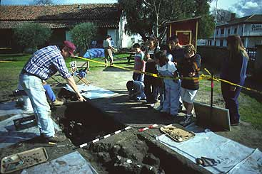

A Self Guided Tour of the Old Mission

The present museum rooms were once the padre's living quarters and work rooms for the Natives. Over the years the rooms were used for Mass (1906) and storage.
The gardens were the center of activity. Here were learned the skills of carpentry, tanning, weaving, and candlemaking.
The present Gift Shop was a storeroom. In 1847, it was a temporary home for the Breen family who had survived the Donner Party tragedy. Their family Bible is in the Museum. The second room was known as "La Sala." Here the padres entertained their guests.
The San Andreas Fault runs along the base of the hill below the cemetery. In 1906 there was a violent earthquake which shook the greater part of central California. The side walls of the church collapsed and were restored in 1976. Vestiges of the original El Camino Real can still be seen north of the cemetery.
The "convento" wing is all that remains of the quadrangle that had enclosed the gardens. The kitchen served 1200 people three times a day. Our collection of books and art works are in many cases older than the mission. Some of the fine vestments in the museum are from China, Russia and Venice and were used at the mission as recently as the l930's.
The cemetery on the north side of the church contains the remains of over 4,000 Christian Native Americans and Europeans. There is also the grave of Ascencion Solorzano, the last full-blooded Mutsune Native of this mission.
The church was secularized in 1835, when much of the mission property was seized by the Mexican government. In I 859, the present mission buildings and 55 acres were given back to the Church by Federal decree of the United States government. San Juan Bautista has the only original Spanish Plaza remaining in California and the church has had an unbroken succession of pastors from its foundation.
Text by Old Mission San Juan Bautista.
Photographs & Web Site Design by Ruben G. Mendoza, 1998.
All Rights Reserved.